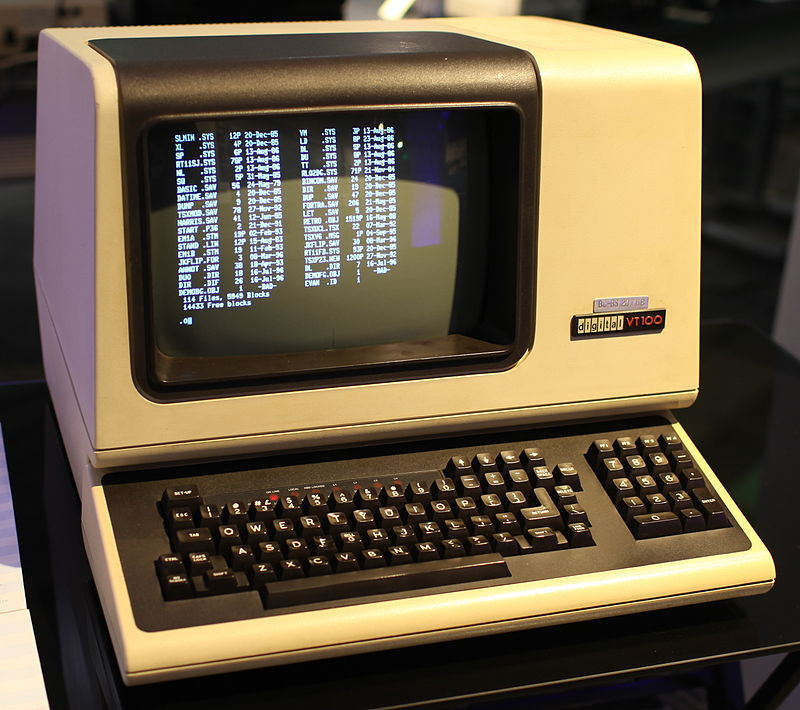
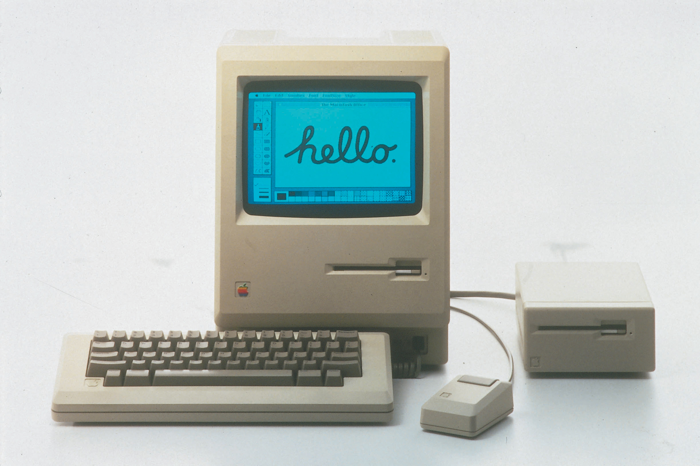
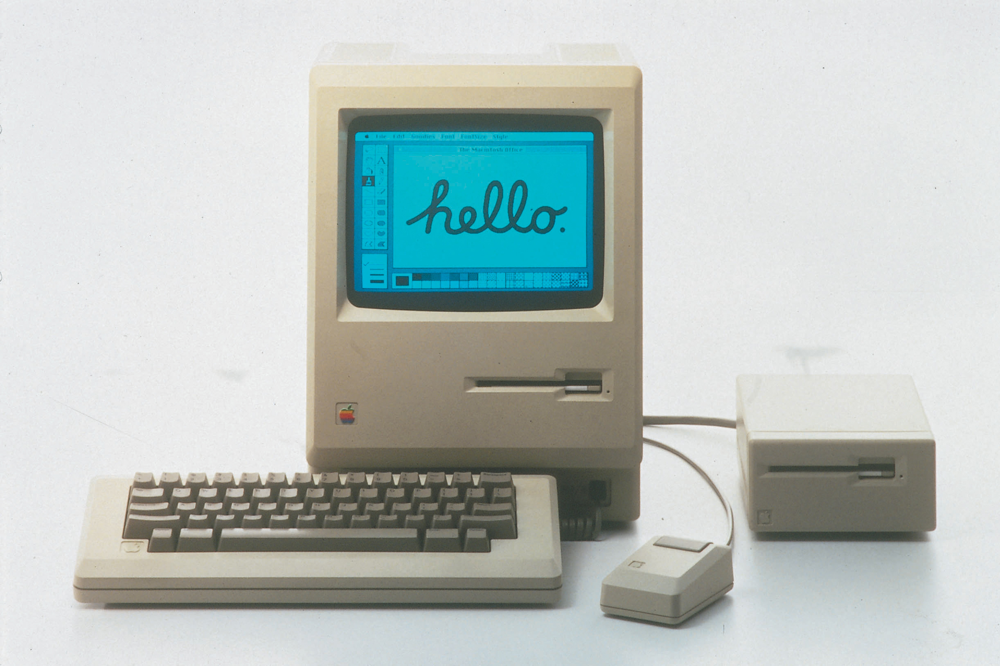
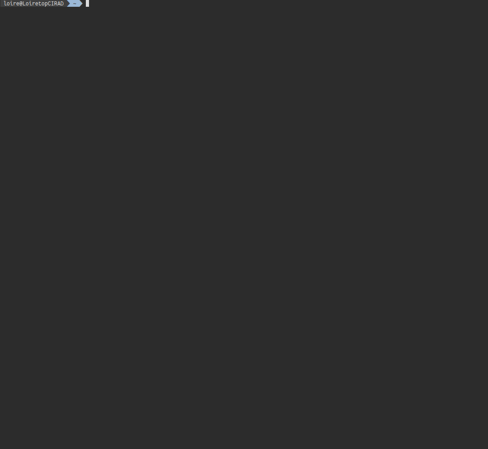
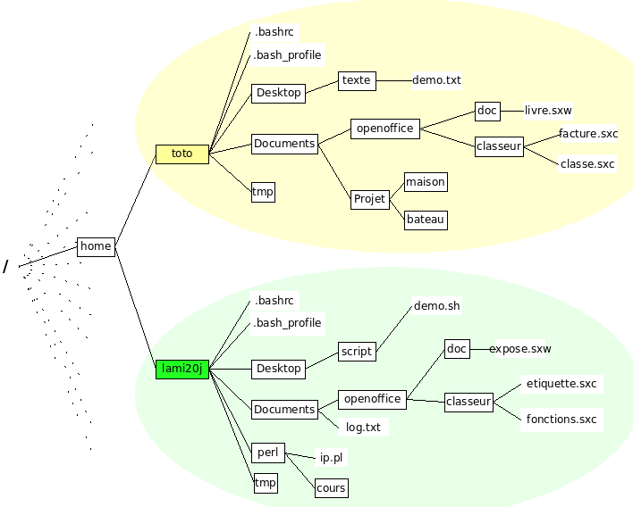

Guide de survie sur Linux
La ligne de commande est mon amie
Formation du collectif de baillarguet: c2b
Programme
- Historique
- Concepts
- Manipulation de fichiers (TP1)
- Execution de programmes (TP2 - Faire un blast)
- Ecriture de scripts (TP3 - Faire un mapping)
- Utilisation de la file d'attente du cluster (TP4 - Faire un assemblage)
Historique
Années 60: Création d'UNIX et du language C dans les laboratoires Bell (aujourd'hui AT&T)
Ken Thompson & Dennis Ritchie
Historique
Le materiel informatique dans les années 70
Historique
Le materiel informatique dans les années 80: Le terminal !
Historique
Arrivée des ordinateurs personnels (90)
 

Historique
Arrivée des ordinateurs personnels (90)
Pendant ce temps ...

Création de Linux (Linus Torvald, 1991, Helsinki)
Création de GNU (Richard Stallman, 1983, MIT)

Free software fundation, patrimoine mondiale de l'humanité (Unesco, 2004)
Pourquoi GNU/Linux ?
- Open source
- Communautaire
- Stable (vous choissisez ou pas de faire des mises à jour)
- Multi-tâches et multi-utilisateurs
- Correction des bugs (pas besoin que MS ou Apple s'interesse à votre problème)
- Dépot de codes (liste de programmes faciles à installer et sans virus)
- Rapide car vous choissisez exactement ce que vous installez sur la machine
- Et surtout ...
Terminal et Shell
Votre mode d'interaction avec le materiel Shell
Ensemble de commande qui permettent d'interagir depuis le terminal avec le noyau linux
Fichiers
TOUT EST FICHIER
- Fichier texte == lisible (ASCII)
- Fichier binaire == illisible
- Repertoire (dossier) == Lien vers des fichiers
- Arborescence de dossiers == rangement
Arborescence
Les chemins absolus et relatifs
Spécifier ou se trouve un fichier
- depuis l'endroit ou vous êtes == relatif
- depuis un point fixe (la racine) == absolu
Symboles clés
- . ou vous êtes
- .. Le répertoire parent (au dessus dans l'arborescence)
- / La racine (lieu qui contient TOUTE l'arborescence)
- ~ votre repértoire utilisateur (home, où tout les fichiers vous appartiennent)
Les droits
C'est un système partagé.Un fichier vous appartient ou pas
exemple
Structure d'une commande bash
F(x,y, ...) = z- F est la commande
- z, le résultat de la commande, est appelé "sortie standard"
- x, y et autre sont des arguments (optionnels)
- s'ajoute des "flag" == options qui modifie le comportement de la commande
- s'ajoute une sortie d'erreur, utile quand quelque chose ne se passe pas bien (souvent)
syntaxe: F -options x y > z
Redirection / pipe
Une commande peut afficher du text à l'écran (appelé sortie standard et erreur standard).
Pour stocker la sortie standard dans un fichier, on utilise le symbole de redirection ">"
Pour stocker l'erreur standard dans un fichier, on utilise le symbole de redirection "2>"
Pour rediriger la sortie standard d'une commande vers une autre commande, on utilise le symbole pipe "|"
Tips!
Appuyer sur TAB pour autocompleter les noms de repertoire et de fichiers
Utiliser le symbole "*" (wildcard) pour signifier n'importe quelle chaines de charatère
exemple